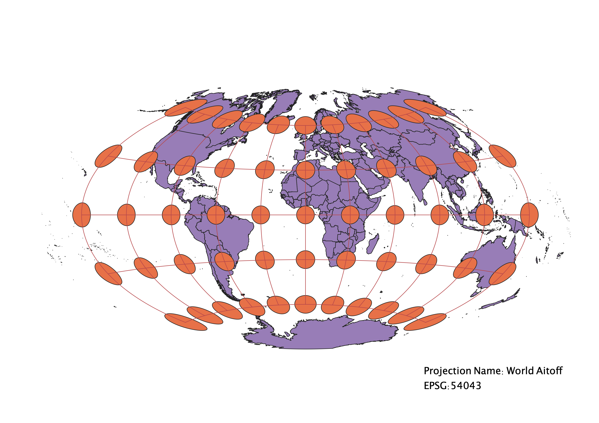
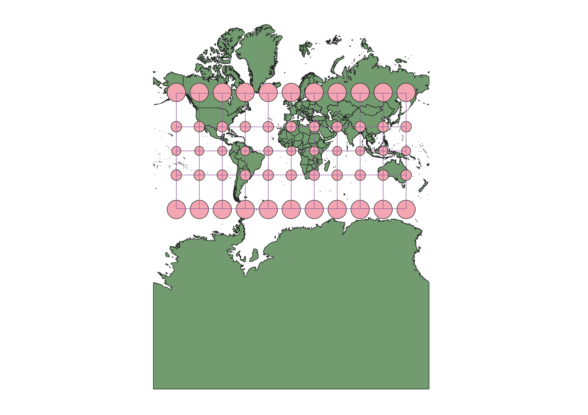
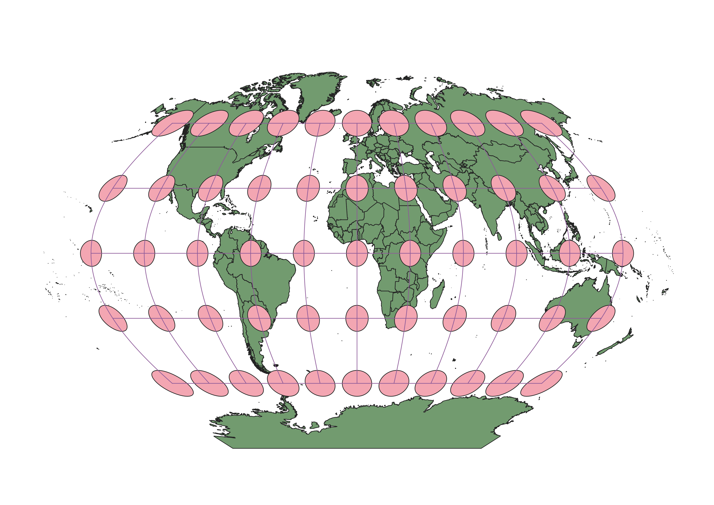
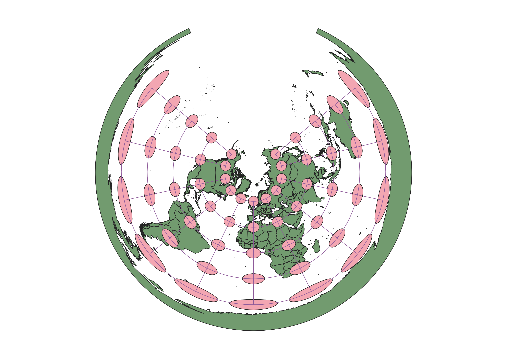
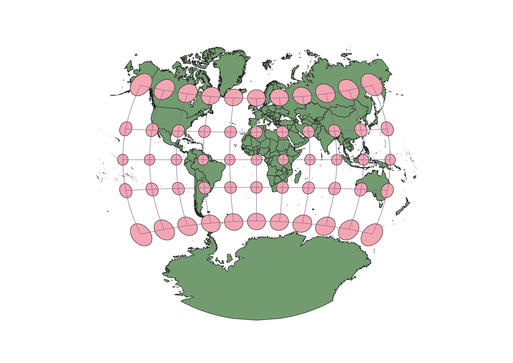
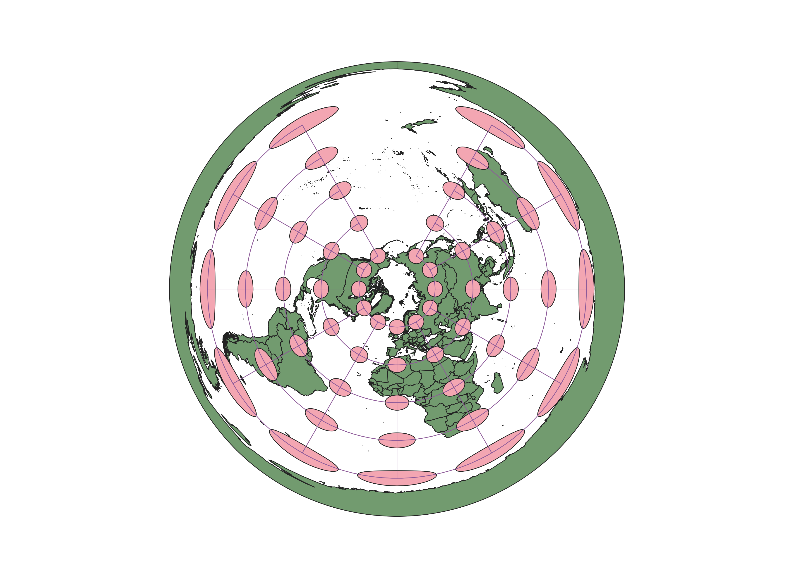

In this project I learned how to display images in different projections
I displayed the different map projections on QGIS using the Indicatrix mapper plugin. By clicking on projection properties I was able to search and select the projection I wanted to display on my basemap.
WGS84 Projection
This ellipsoidal projection distorts area and shape of areas further away from the equator but preserves direction.
ESPG:4326

Aitoff Projection
This azimuthal projection distorts area and shape. Scale is accurate along the equator and central meridian.
ESPG:54043

Psuedo Mercator
This spherical projection preserves shape but distorts area. Area is most accurately displayed near the equator and becomes most distorted near the poles.
ESPG:3857

Cylindrical Equal Area
This equal area projection preserves area but heavily distorts shape. It is undistorted along the equator and is very distorted near the poles which appear very flat.
ESPG:54034

Sphere Winkel
This spherical projection slightly distorts shape and area. Distortion worsens as you approach the poles.
ESPG:53018

Equidistant Conic
This conic projection preserves distance and distorts shape and area. Distortion grows away from the center parallels.
ESPG:54027

Sphere Robinson
This spherical projection distorts area, shape, and distance. Distortion of area occurs along increasing lattitudes but not longitudes.
ESPG:53030

Van der Griten I
This polyconic projection distorts area, shape, and distance. Scale is accurate along the equator but distortion grows away from the equator and is extreme near the poles. Symmetric distortion along equator and central meridian.
ESPG:54029

North Pole Azimuthal Equidistant
This projection preserves distance and direction. Distortion of area and shape increase outward from center.
ESPG:102016

Data used for this project
Download Natrual Earth 1:10m Cultural Vector